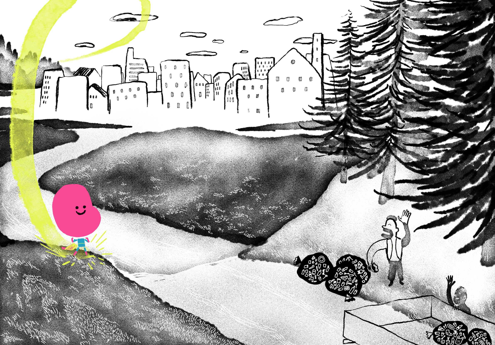
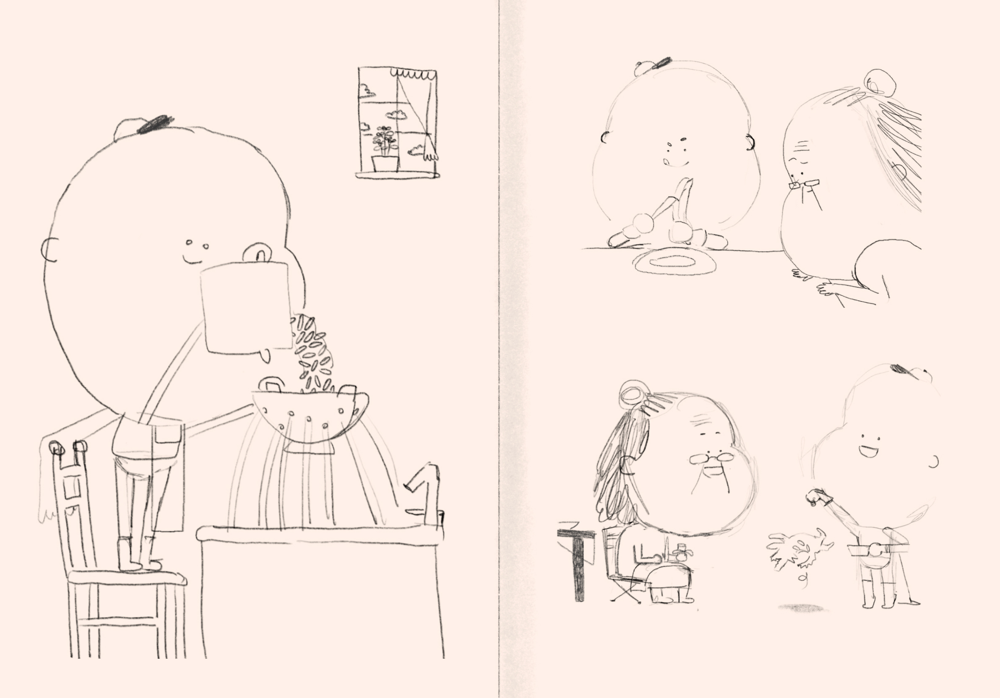
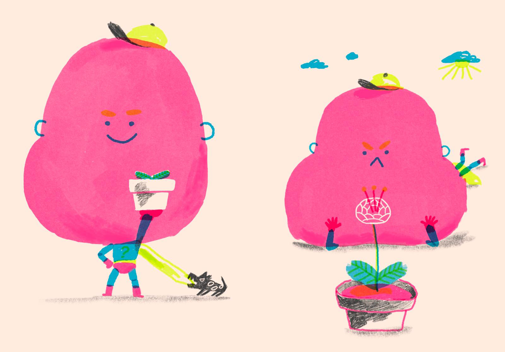

Super Fluo
I supereroi non sono tutti uguali. C’è chi ritrova gli occhiali del papà, chi scalda il pranzo con un tocco e chi aggiusta tutto trasformando le mani in utensili. Con Super Fluo, però, è tutta un’altra storia. Lui è convinto di avere poteri straordinari: far crescere i fiori, spostare il Sole con lo yoga, far smettere di piovere dopo giorni di intensa concentrazione. Ma c’è una persona per cui Super Fluo è davvero un supereroe: la sua adorata Nonnina. Per lei trova il modo di far crescere i fiori, spostare il Sole, fermare la pioggia e soprattutto farla ridere di gusto.
Di cosa parla
Super Fluo è una storia sui superpoteri che non sembrano superpoteri. Quelli piccoli, quotidiani, quasi invisibili.
Super Fluo sogna grandi imprese, ma il suo talento più speciale nasce quando è accanto alla sua Nonnina: ascoltarla, aiutarla, farle compagnia, inventare modi per farla stare bene.
È un libro sull’attenzione e sull’empatia, su quello che possiamo fare per le persone che amiamo. Anche quando non sappiamo volare, sollevare palazzi o fermare davvero la pioggia.
Backstage

Super Fluo è nato da un disegno
Un giorno Lucio mi ha mandato l'illustrazione di un personaggio dall'aspetto decisamente insolito. Da quell'immagine è nata l'idea di un supereroe completamente inutile, superfluo per l'appunto.

I primi disegni
Primi studi del personaggio e bozze di storyboard.

Cose rimaste fuori
Appunti, idee e dettagli che non sono arrivati fino alla versione finale, ma fanno ancora parte della storia.